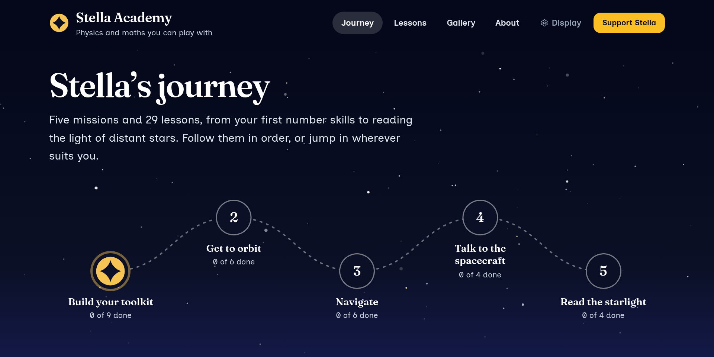
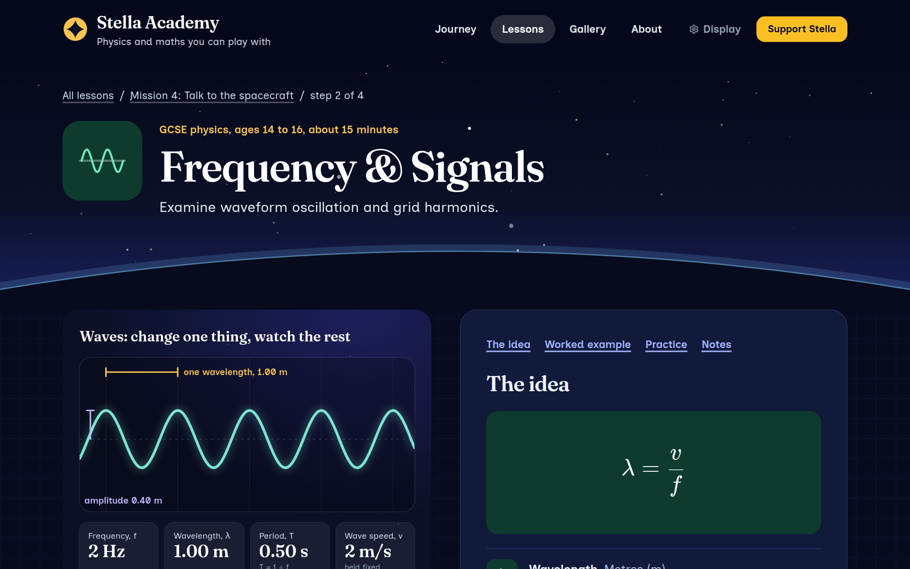
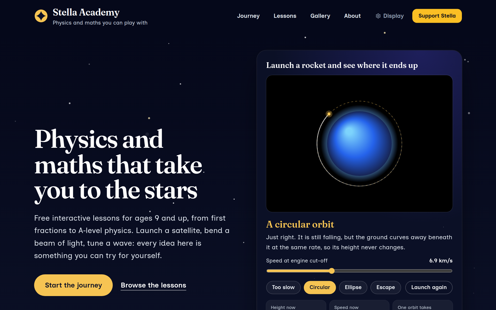

What we have built, where it is going, and how teachers and partners can shape it.
The vision, October 2026 · www.stella-academy.org
Stella Academy teaches physics and maths as one journey: from first number skills to reading the light of distant stars. Every lesson answers a question a real space mission has to answer.
How fast must a rocket go to stay up? Why does a spacecraft need trigonometry to know where it is? How does a signal cross the solar system? What can a rainbow tell you about a star?
The syllabus is the same one schools already teach. What changes is the reason to care about it.

Stella’s journey, as a learner sees it: five missions in order.
For ages 9 and up. Each mission is a short run of lessons in order, and each lesson takes 10 to 20 minutes.
The number skills every other mission relies on.
9 lessons
What it takes to leave the ground and stay up.
6 lessons
The maths of knowing where you are and where you are heading.
6 lessons
How a spacecraft is powered, and how it sends word home.
4 lessons
What light and data tell us about things too far away to visit.
4 lessons
Lessons follow the stages of the curriculum for England: key stage 2 (ages 9 to 11), key stage 3 (11 to 14), GCSE (14 to 16) and A-level (16 to 18). Each one quotes the Department for Education statements it covers. They are not matched to a single exam board.
Learners tick lessons off as they go, and the star moves along the route. Progress is kept in their own browser; there are no accounts.

A GCSE lesson on waves. The model on the left responds as you change it.
We are not trying to be Brilliant, Bitesize or Isaac Physics. They cover everything, with teams and budgets to match. We cover one theme and try to do it well.
That makes Stella a companion to what schools already use: the thing a teacher shows at the start of a topic, or a parent hands to a child who has asked how rockets work.

The home page: choose a speed, launch, and see whether you reach orbit.
Slowly, and only as far as each step earns. Nothing is built until the step before it has shown it is wanted.
| Step | What happens | We move on when |
|---|---|---|
| 1. Written with teachers | Teachers review the lessons at their level. A reviewed lesson names its reviewer; the rest keep the AI notice. | lessons carry a teacher’s name |
| 2. Used in a classroom | One mission tried with a class or club, with a pack to go with it: lesson plan, worksheet, slides. | a teacher would use it again |
| 3. Somewhere to keep progress | Optional accounts, created by an adult for younger children, so progress follows a learner between devices. | families ask for it |
| 4. Paying its own way | The lessons stay free. Income comes from voluntary support, teaching packs, and later a paid tier for saved progress, marking and a tutor. | it covers its costs |
We charge only for our own work. NASA’s photographs and footage stay in the free lessons, credited to their source.
Read two or three lessons at your level and tell us what is wrong, what is pitched badly and what is missing. About 20 minutes a lesson. Your name goes on the lessons you review, if you want it there.
Try one mission with your group and tell us what happened. “Get to orbit” is six lessons and ends with a launch simulator.
We are looking for a university or school partner to apply with for public-engagement funding, with Stella as the delivery partner.
A named credit, a say in what is built next, and every teaching pack free. There is no budget for fees yet; review time is the first thing a grant would pay for.
www.stella-academy.org
Try the journey at /journey, then get in touch: hello@pixjobs.com